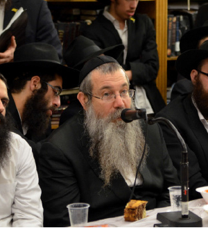

ראיון מקיף ומרתק
בחלוף שלושה ימי-אור האוצרים בהם רגעי שמחה פנימית של התעלות ורוממות נפשית בחצרות קדשינו: שמיני עצרת, שמחת תורה ושבת בראשית, ישב “בית משיח” לראיון מקיף ומרתק עם המשפיע הנודע, הגאון החסיד הרב יוסף יצחק אופן - שנמנה על רבבות החסידים ששהו במחיצת הרבי מלך המשיח בחודש תשרי תשע”ד – למעין שיחת-סיכום על החודש
בחלוף שלושה ימי-אור האוצרים בהם רגעי שמחה פנימית של התעלות ורוממות נפשית בחצרות קדשינו: שמיני עצרת, שמחת תורה ושבת בראשית, ישב “בית משיח” לראיון מקיף ומרתק עם המשפיע הנודע, הגאון החסיד הרב יוסף יצחק אופן - שנמנה על רבבות החסידים ששהו במחיצת הרבי מלך המשיח בחודש תשרי תשע”ד – למעין שיחת-סיכום על החודש שחלף, והמטען החסידי לפירוק החבילות - “ויעקב הלך לדרכו” - להכין עצמו וסביבתו לקבל פני משיח • בתנועה חסידית אותנטית ובסגנונו הנדיר, מצליח הרב אופן להניף אותנו טפח מעל לקרקע המציאות, ומאפשר לנו להביט על הנסיעה לרבי באור פנימי ועמוק יותר • במקביל לתחושת החסר בזמן ההעלם וההסתר וההתרפקות הבלתי-נמנעת על הזיכרונות מימי קדם, מביע הרב אופן את התפעלותו מהאמונה הטהורה הגודשת את הלבבות דווקא בימים אלו, אותה חיות עוצמתית שמתגלה אצל כל חסיד שמגיע לרבי בחודש החגים • כשהוא נשאל מהיכן נובעת העוצמה הזו? הוא מרים את מבטו לרגע ולא מבין את פשר התהייה, “המקור לזה הוא אחד: הרבי כאן!” הוא קובע בנחרצות.

להתכונן, כדי לקלוט בפנימיות
“הנסיעה לרבי”, פותח הרב אופן את שיחתנו, “מתחילה בהכנות לנסיעה. כאשר מתכוננים באופן הנכון, אזי מגיעים לרבי כפי שחסיד צריך להגיע לרבי, ואפשר לקלוט באופן פנימי את כל הכוחות שהרבי משפיע עלינו בחודש תשרי.
“המשפיע שלנו, הרה”ח ר’ שלמה חיים קסלמן, הדגיש תמיד את חשיבות ההכנות הרוחניות שיש לערוך לפני הנסיעה לרבי. אמנם בנוגע לנסיעה לחודש תשרי בלבד, הוא נטה להקל, והמליץ לבחורים לנסוע גם אם לא הכינו את עצמם כיאות. אבל כאשר ביקשו לנסוע לשנה שלימה, לשנת הקבוצה, טען ר’ שלמה חיים שאי-אפשר לנסוע לרבי ללא הכנה רוחנית מתאימה. היו כאלה שטענו שבימינו אין צורך בהכנות, והעיקר לבוא לרבי, אבל כאשר הרה”ח ר’ יקותיאל גרין זכה בגורל בכרטיס טיסה לרבי, כתב לו הרבי שעליו להתכונן לפני הנסיעה. ר’ שלמה חיים התוועד באריכות על ההוראה הברורה במכתבו של הרבי.
“בעבר, ההכנות הרוחנית היו מעורבות עם הרבה הכנות גשמיות. פשוט היו צריכים לעבוד כדי להשיג את הכסף לכרטיס טיסה. המחירים היו בשמים, ומחיר הכרטיס היה שווה ערך לחמשה משכורות של אדם רגיל. לכל אחד היה את הסיפור שלו, איך הוא השיג את הכסף לכרטיס. בזמני, היו הרבה בחורים שב’בין הזמנים’ היו עובדים ביקב כדי לממן את הכרטיס.
“כאשר נסעתי לראשונה לרבי, קניתי רק חצי כרטיס, ונשארתי לכמה שנים אצל הרבי. אבל כדי לכסות את ההוצאות של חצי הכרטיס, הייתי צריך לקרוא בתורה וללמוד עם תלמידים במשך שנה שלימה!
“לעומת זאת בשנים האחרונות, לאחר שהרה”ח ר’ שלום בער דריזין הקים את קרן “דור דעה”, שמאפשרת לבחורים להשתתף במבצעי לימוד ולקבל השתתפות בכרטיס הטיסה, ועד לכיסוי מלא של הכרטיס – זה פשוט תענוג. בחורים יכולים לשבת וללמוד בלי דאגות כספיות, ולהתמקד בהכנות הרוחניות.
“כמובן שמבצעי הלימוד בעצמם מהווים הכנה לנסיעה, כאשר בחורים לומדים תניא ומאמרים בעל-פה, אבל לא די בכך. בנוסף להוספה בלימוד, דרש ר’ שלמה חיים להוסיף בעבודת התפילה, להתפלל יותר בכוונה, ופשוט להוסיף ביראת שמים. להיות יותר ‘חסיד’.
“אם בעבר היה צורך בהכנה לפני הנסיעה לרבי, היום זו ממש חובה. מכיוון שאנו עדיין בגלות איומה ולא רואים את הרבי – המשפיעים צריכים להכין את הבחורים לפני הנסיעה, שיידעו מה זה רבי, ומה המשמעות של נסיעה לרבי”.
פעם בחורים לא נסעו לתשרי. זה מהפך!
הרב אופן, שמאז נסע לרבי לראשונה, בשנת תשכ”ז, זכה להיות עשרות פעמים בתשרי אצל הרבי – מדגיש בשיחתנו כי המראות הנהדרים של אלפי בחורים הנוהרים לתשרי אצל הרבי, הם חידוש נפלא של השנים האחרונות. הרבה בזכות קרן “דור דעה”.
“לפני חמישים שנה, בחורים היו נוסעים בעיקר לשנת הקבוצה. לתשרי היו מגיעים בעיקר אברכים וזוגות צעירים. היו גם בחורים שנסעו עם הוריהם. אבל רוב הבחורים נשארו בישיבות. כל הסדר הישיבתי היה נראה שונה לחלוטין מהסדר כיום: הלימודים בישיבה נמשכו גם בראש השנה וביום הכיפורים, ורק לקראת חג הסוכות היו התלמידים יוצאים ל’בין הזמנים’.
“למרות שבאופן רשמי הישיבה הייתה סגורה עד לאחרי שמחת תורה, בחורים רבים היו מגיעים לשמחת תורה בכפר חב”ד, כדי להשתתף בהתוועדויותיו המיוחדות של המשפיע ר’ שלמה חיים קסלמן. בליל שמחת תורה היינו מתוועדים איתו אצל בנו הרה”ח ר’ וועלוועל קסלמן, ובשמחת תורה ביום, מיד לאחר תפילת שחרית היינו יושבים להתוועדות עד השעה שתים, שאז פנו ל’הקפות’. תפילת מוסף הייתה מסתיימת לקראת שקיעה, והיינו מזדרזים ליטול ידיים ולחזור להתוועד עד מאוחר בלילה.
“כך היה הסדר במשך שנים רבות. כאשר הרה”ח ר’ מענדל פוטרפס התמנה למשפיע בישיבה בכפר חב”ד, הוא עורר את הבחורים לנסוע לרבי עוד לפני שנת הקבוצה. אבל גם אז, לבחורים לא היה כסף לנסוע בכל חודש תשרי לרבי, ורק בודדים יכלו להרשות לעצמם את התענוג הזה.
“המציאות המדהימה בשנים האחרונות, כאשר חלק הארי של תלמידי התמימים בארץ הקודש נוסעים לתשרי אצל הרבי, ולמעשה מעבירים את הישיבות מארץ הקודש אל ‘בית חיינו’, שם לומדים כולם בישיבה אחת גדולה, בסדרי הלימוד של הכנסת אורחים – כל זה נזקף לזכות קרן “דור דעה”. אלפי בחורים משתתפים במבצעי הלימוד ומקבלים השתתפות נכבדה בהוצאות הטיסה לרבי.
לתת לתינוק חיסון רוחני
לצד הנהירה של אלפי הבחורים, מדגיש הרב אופן את החשיבות המיוחדת בנסיעתם של האברכים הצעירים וזקני החסידים, לתשרי אצל הרבי. את רוב שנות בחרותו עשה הרב אופן בבית חיינו, כאשר שהה שש שנים ברציפות בחצרו של הרבי, וזכה לספוג אלפי שעות של שיחות ומאמרים, תפילות והתוועדויות עם הרבי. לא פלא, שלאחר חתונתו מיהר להביא את רעייתו הטרייה אל הרבי, ואת השבע-ברכות האחרון הספיקו לערוך בבית חיינו. מאז, כמעט בכל שנה הגיע לרבי. לעיתים הגיע לבדו, לעיתים עם רעייתו, ומפעם לפעם אף הגיעו בהרכב מלא, עם כל הילדים.
“היה מונח אצלי בתודעה”, אומר הרב אופן בפשטות, “שכל ילד שנולד, צריך להגיע לרבי בהזדמנות הראשונה. שהרבי יראה אותו. כמו שנותנים חיסון גשמי לתינוק, צריך לתת לו גם חיסון רוחני, בראיית פני הרבי.
“במהלך השנים נוכחתי לדעת, שראיית פני הרבי אינה רק חיסון רוחני, אלא גם סוג מסויים של חיסון גשמי… לאחד הילדים היו כאבי אוזניים כרוניים, עד כדי כך שהרופאים אף שקלו לערוך ניתוח כפתורים באוזניים. בגיל שנתיים הגעתי איתו אל הרבי, ואחרי הביקור אצל הרבי, כל הכאבים נעלמו. אצל בן אחר הייתה בעייה חמורה במערכת העיכול, והרופאים טענו שאין מרפא לבעייתו, והוא יאלץ להתמודד איתה כל ימי חייו. הבאתי אותו אל הרבי וביקשתי ברכה. הרבי הפנה אותי לרופא ידיד, וגם הבעייה הזאת נעלמה…”
הנסיעה לרבי היא צורך חיוני
יש אברכים שלא מבינים איך אפשר להפריש מהמשכורת המצומקת כסף עבור נסיעה לרבי, ובוודאי שלא עולה בדעתם לנסוע לרבי עם כל המשפחה. אבל לדעתו של הרב אופן מדובר בסדרי עדיפויות. “כאשר מרגישים שהנסיעה לרבי היא צורך חיוני, מצליחים למצוא את הכסף הדרוש לכך”, הוא אומר, ומשתף אותנו בהתמודדות שלו עם הנושא:
“לאחר חתונתי, לא חלפו שנה וחצי בלי שאהיה אצל הרבי. אחד מקרובי משפחתי לא ראה זאת בעין יפה, וטען כלפיי: הרי אתה חי בדוחק רב, מדוע לבזבז כסף על טיסה לרבי? אמרתי לו, שיש אנשים שמוציאים סכומים גדולים על סיגריות, למרות שהם חיים בצמצום, כי הם מרגישים שזה צורך חיוני לחייהם. עבורי, הנסיעה לרבי, היא צורך הרבה יותר חיוני!
“במהלך השנים נוכחתי לדעת, שהרבי לא נשאר חייב, וכנגד כל מה ששילמתי על הטיסות, קיבלתי בכפל כפליים:
“כמה שנים אחרי החתונה חשבנו לקנות דירה. כתבתי על כך לרבי, אך לא זכיתי למענה. בשנת תשד”מ, בהיותי אצל הרבי, הכנסתי מכתב עם כמה שאלות, והרבי השיב על שאר השאלות מלבד שאלת קניית הדירה. הבנתי שגם זה סוג של תשובה, שבינתיים עלי להמתין.
“כעבור שנתיים ירדו מחירי הדירות בארץ הקודש בצורה דרסטית, וכאשר שאלתי שוב את הרבי, זכיתי לתשובה לעשות כעצת ידידים מבינים. בעצת הידידים ובברכת הרבי קניתי את אותה דירה בה היינו גרים בשכירות. בעל הבית מכר לנו את הדירה במחיר זול במיוחד, ובתשלומים נוחים.
“לא חלפה חצי שנה, ומחירי הדירות החלו לנסוק. המחירים המשיכו לעלות, עד שכאשר מכרנו את הדירה ועברנו לבית חדש (בברכת הרבי כמובן), קיבלנו יותר מכפליים מהמחיר ששילמנו עבור הדירה. שוחחתי אז עם אותו קרוב משפחה, ועשיתי איתו חשבון שהרווח של הדירה היה הרבה יותר מכל ההוצאות על הכרטיסים במהלך השנים!
הנסיעה חשובה, גם לזקני החסידים
לצד עבודתו כמשפיע ב”ישיבת חסידי חב”ד ליובאוויטש – צפת”, מכהן הרב אופן כמשפיע לעדת חסידי חב”ד בשכונת רמת שלמה בירושלים, ומוסר שיעורי חסידות בכל רחבי הארץ. כך, לצד עולמם של תלמידי התמימים, מכיר הרב אופן מקרוב גם את עולמם של חסידים מבוגרים שכאשר מעוררים אותם לנסוע אל הרבי, הם מתמודדים עם קשיים משלהם:
דווקא הם, שזכו להיות אצל הרבי בשנות הלמ”דים, המ”מים או הנו”נים – מתקשים לנסוע לרבי בתקופה זו של העלם והסתר. הם, שזוכרים את הרבי בתפילותיו, התוועדויותיו ושיחותיו, מתקשים לחשוב על האפשרות שיגיעו ל-770 ולא יזכו לראות את הרבי. הם מעדיפים לשמר בזיכרונם את בית חיינו כפי שראו אותו בפעם האחרונה, כאשר ראו את הרבי בגילוי, לעיני בשר.
הרב אופן יכול להבין את תחושותיהם של אותם חסידים, אבל לדידו ברור שאין זו הדרך הנכונה. “לצערנו אנחנו נמצאים יותר מידי זמן בתקופה של העלם והסתר, והצד השמאלי שבקרבנו מנצל זאת כדי לקרר את ההרגש החסידי הטבעי.
“הרבי לימד אותנו שגם בזמן של העלם והסתר, צריכים להגיע לרבי. בתש”ה, לאחר שהרבי הריי”צ היה במצב בריאותי קשה מאוד ולא יצא לקהל, היו חסידים שחשבו שאין טעם להגיע ל-770. הרבי הריי”צ אמר אז לרה”ח ר’ יצחק הענדל ממונטריאל, שהגיע הזמן שחסידים יספגו מהקירות של 770! גם בשיחותיו ומכתביו של הרבי בתקופה שלאחר יו”ד שבט תש”י, רואים בבירור את דעתו של הרבי, שגם בתקופה של העלם והסתר, צריכים להמשיך ולהגיע ל-770, כי כאן הרבי נמצא ומכאן שואבים את הכוחות להמשך השליחות.
“באופן אישי”, מוסיף הרב אופן ומשתף אותנו בתחושותיו, “בכל ביקור ב-770, אני מרגיש כאילו חזרתי לביתי. כשאני נכנס לזאל הקטן, היכן שישבתי ולמדתי משך שש שנים, נהיה לי חם בלב. אני נזכר באותם לילות שבת, כאשר הרבי התפלל קבלת-שבת בזאל הגדול למטה, ומכיוון שהיה זה בשעת ה’סדרים’, המשיכו הבחורים בסדר חסידות, ורק הבעלי-בתים היו משתתפים במניין של הרבי. בסיום התפילה, כאשר הרבי עבר ליד הזאל הקטן, בדרכו לחדרו הקדוש – הבחורים שישבו ממול הדלת היו נעמדים ואחריהם כל הבחורים נעמדו עד לכניסת הרבי לחדרו הקדוש. אלו רגעים שאי-אפשר לשכוח.
“מבחינה מסויימת, לחסידים שהיו כאן בשנים ההן, וזכו לראות את הרבי – הרבה יותר קל ‘לחיות’ את הרבי בבואם לבית חיינו, מכיוון שכל פינה ב-770 מזכירה להם את הרבי. כשהם מסתכלים על בימת התפילה, הם נזכרים מיד בדמותו של הרבי מתפלל; בבימת ההתוועדויות הם רואים את הרבי מתוועד, ובפתח חדרו הק’ הם רואים בעיני רוחם את הרבי מקבל את הפ”נים או מחלק לעקאח…”
לצייר במחשבה את הרבי
ומה באשר לבחורים הצעירים, שרובם נולדו לאחר ג’ תמוז תשנ”ד, ומעולם לא זכו לראות את הרבי בעיני בשר? כיצד הם יכולים ‘לחיות’ עם הרבי ב-770?
– את התשובה לשאלה זו מעביר הרב אופן לתלמידיו בהתוועדויות שלפני הנסיעה לרבי. “כאשר מגיעים לבית חיינו, הרבי משפיע עלינו שפע של אורות רוחניים, אבל הרבי רוצה שהאורות הללו לא יישארו בבחינת מקיפים, אלא יתעצמו אתנו ויחדרו בנו בפנימיות. שהאור של הרבי יוציא אותנו מהגשמיות שלנו, וירומם אותם לדרגה רוחנית נעלית יותר.
“כדי שזה יקרה, צריך קודם כל ללמוד את השיחות והמכתבים של הרבי, בהם מדובר על חשיבות הנסיעה לבית חיינו גם בזמן של העלם והסתר. כאשר לומדים את השיחות, מבינים שהרבי ממשיך להשפיע עלינו מבית חיינו, גם אם אין זה באופן גלוי. בדבריו של הרבי יש כוח מיוחד לשבור את הקרירות, ולעורר את הרגש החסידי הטבעי.
“בהמשך לזה, לאורך כל תקופת השהייה בבית חיינו, יש לצייר במחשבה את דמותו של הרבי, כפי שהיינו אמורים לראותו, לולא ההעלם וההסתר. חסד גדול עשה עמנו הקב”ה, שברא את מכשיר הווידאו, שבאמצעותו גם בחורים שמעולם לא ראו את הרבי, יכולים לצייר במחשבתם את התפילה במחיצת הרבי, התוועדות, שיחה, חלוקת דולרים או יחידות עם הרבי.
“אמנם, אינה דומה ראייה בעיני בשר לציפייה בווידאו, ובפרט שיש רגעים נדירים ומיוחדים שאין מהם ווידאו, כך שקשה מאוד לדמיין אותם. זה כמו להסביר לעיוור צבעים כיצד נראה צבע אדום… ובכל זאת, אלו שזכו לראות צריכים לשתף בזיכרונותיהם את הבחורים הצעירים, כדי שגם הם יחושו, ולו מן המעט, את אותם רגעי הוד מיוחדים.
“קח לדוגמא את ההקפות אצל הרבי. זה היה שיא-השיאים של חודש תשרי. כאשר הרבי נכנס להקפות, הוא הניף את ידיו הקדושות והרקיד את הקהל הגדול בעוצמות אדירות שאי-אפשר לתאר. יש וידאו ידוע מכינוס צבאות ה’ בחול המועד סוכות, שם רואים את הרבי מעודד בחוזקה את קהל החסידים. זוהי בבואה חיוורת מול מה שראינו בשמחת תורה. הקהל העצום, שבקושי יכל לרקוד על מקומו, קפץ מעלה ומטה, עד שממש “פקע איגרא”. אחר-כך, בהקפה הראשונה והשביעית, רקד הרבי יחד עם גיסו, הרש”ג, כאשר ידו הימנית מונחת על כתפו של הרש”ג, ובידו השמאלית מחזיק את ספר התורה, ומניף אותו למעלה, תוך שהוא מסתובב על מקומו ומסתכל על אלפי החסידים.
“והיום, לצערנו, אין לנו את כל הגילויים הללו. בזמן ההקפות מונח ספר התורה הקטן על הסטנדר של הרבי, ובשאר חמשת ההקפות עובר הקהל לנשק את ספר התורה של הרבי. אך למרות הכול עומדים אלפי חסידים ורוקדים בשמחה ובחיות עצומה!”
אנחנו שואלים את הרב אופן, מהיכן שואבים החסידים כיום את החיות והשמחה והגדולה, למרות שלא רואים כלום?
והרב אופן משיב בפשטות ובנחרצות: “כי הרבי נמצא! הרבי נותן חיות. מה השאלה בכלל?”…
איך ‘לחיות עם הרבי’?
“מבחינה מסויימת”, מוסיף הרב אופן לאחר רגע של מחשבה, “היום רואים את הכוח של הרבי יותר מאשר בשנים קדמוניות. האמונה, הציפייה וההתקשרות של אלפי החסידים, שרוקדים בהתלהבות בשמחת תורה, מתוך תשוקה עצומה לראות את הרבי – זה פלאי-פלאות!
“בקטנותי, אמנם התגוררתי בארץ הקודש, ולא ראיתי את הרבי, אבל קיבלנו תמיד דרישות שלום מהרבי. פעם הגיע ניגון חדש מהרבי, פעם לעקאח מהרבי, ופעם דמי חנוכה. כשגדלנו יותר, חיינו עם השיחות החדשות של הרבי.
“גם היום אפשר ‘לחיות עם הרבי’, אבל זה תלוי בנו. בחור שרוצה לחיות עם הרבי באופן פנימי, צריך לשבת וללמוד ברצינות מאמר או שיחה של הרבי, ולצייר שכעת הרבי יושב מולו ואומר את השיחה או המאמר, כפי שנאמר “כל האומר שמועה . . יהא רואה כאילו בעל השמועה עומד כנגדו”. חז”ל אומרים על לימוד התורה שצריך להיות “כדיוגטמא חדשה שהכל רצין לקראתה”, ובאופן כזה צריך להיות לימוד שיחותיו של הרבי, להרגיש כאילו היום הרבי אמר את השיחה.
“בהקשר זה ראוי להדגיש את החשיבות בלימוד שיחותיו של הרבי כפי שנאמרו בהתוועדות, והובאו בסדרת שיחות קודש או תורת מנחם התוועדויות. כאשר לומדים את ההנחות מההתוועדויות, אפשר להרגיש כאילו נמצאים כעת בהתוועדות עם הרבי!”
סדרי הלימוד - תענוג רוחני
השילוב הזה של תשרי אצל הרבי, והצורך ללמוד את שיחותיו ומאמריו של הרבי – מעלה מייד בזכרוננו את סדרי הלימוד המיוחדים של “אש”ל הכנסת אורחים”, במסגרתם לומדים אלפי התמימים ושוקדים על שיחותיו ומאמריו של הרבי במהלך חודש תשרי.
הרב אופן אינו יכול להבליע את התפעלותו מפעילותו העניפה של ארגון “אש”ל הכנסת אורחים”, לטובתם הגשמית והרוחנית של אלפי האורחים. “סדרי הלימוד הנפלאים החלו בזכות ארגון “אש”ל הכנסת אורחים” בניהולו של הרה”ח ר’ מנחם מענדל הכהן הענדל, שבשיתוף פעולה עם הנהלות הישיבות ברחבי תבל דואג לא רק לגשמיות של האורחים, אלא גם לרוחניות של האורחים.
“בשנים עברו היו סדרי לימוד לאורחים, אבל היה זה רק שעתיים בבוקר ושעתיים בערב, והסדרים היו מיועדים לאברכים, שכן – כאמור – לא היו הרבה בחורים שהגיעו לתשרי. בשנים האחרונות, לעומת זאת, כאשר אלפי בחורים מגיעים לכאן, השכילו בהכנסת אורחים לשכלל את המחלקה הרוחנית ולתת מענה הולם גם בתחום הזה. פשוט תענוג להכנס לזאל של 770 ולשמוע את קול התורה שבוקע מאלפי האורחים. זה דבר עצום!
שהכל יהיה חדור בגאולה ומשיח
לסיום שיחתנו, מזכיר הרב אופן כי בחודש החגים צריכים לארוז את כל השפע וההארות, ובמהלך השנה עלינו לפרוק את הכל אל חיי היום יום:
“על מאמר הגמרא “רבי לא שנה חייא מניין” פירשו חסידים שאם לא מגיעים לרבי פעם בשנה, מהיכן תהיה לנו חיות? רואים במוחש שהנסיעה לתשרי אצל הרבי פועלת חיות מיוחדת, הן אצל בחורים והן אצל אברכים. זאת חיות מיוחדת שחודרת בכל פרטי החיים במהלך השנה.
“מובא בחז”ל על חודש תשרי, “חדש השביעי, שהוא משובע בכל: גתות בתוכו, ברכות בתוכו, כפור בתוכו, סוכה בתוכו, לולב וערבה בתוכו”, ובפרט על פי ביאורי תורת החסידות שראש השנה הוא כמו ראש הממשיך חיות לכל הגוף – מובן עד כמה גדולה החשיבות להיות במהלך חודש תשרי אצל הרבי, ולספוג את החיות המיוחדת הזאת.
“ומכיוון שכל חודש תשרי ספוג בציפייה להתגלות המלך המשיח בגאולה השלימה, החל מראש השנה ויום הכיפורים, בהם אנחנו מבקשים מהקב”ה בכל תפילה “מלוך על כל העולם כולו בכבודך” “וידע כל פעול כי אתה פעלתו” שכל זה יהיה בשלימות בגאולה העתידה, ובפרט בשמחת תורה, בו נאמר “אגיל אשמח בשמחת תורה, בא יבוא צמח בשמחת תורה”.
“הרי ראוי לסיים בהוראה למעשה בפועל משיחתו של הרבי בליל שמחת תורה תשנ”ב: “וכיון ששמחת תורה הוא מהמועדים בחודש תשרי, שהינם מועדים כללים על כל השנה כולה – מובן שהדגשת ענין הגאולה ומשיח שבשמחת תורה נמשך אחר כך על כל השנה כולה”“.